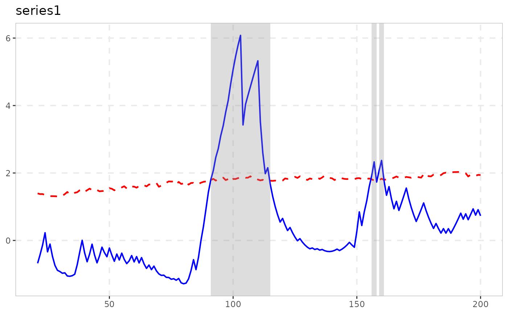

Recursively Demeaned Sign-Based Bubble Test (s-bar-PWY / s-bar-PSY)
Source:R/radf_sign.R
radf_sign_dm.Rdradf_sign_dm computes Harvey, Leybourne & Zu (2020)'s second
sign-based analogue of the recursive right-tailed unit root test,
denoted \(\bar{s}PWY\)/\(\bar{s}PSY\) in the paper: the same
construction as radf_sign, but built on a recursively
(expanding-window) demeaned cumulated-sign series, Ctilde_t =
sum_{i=2}^{t} (sign(diff(y)_i) - mean(sign(diff(y)_{2:i}))), rather
than the raw cumulated sign radf_sign uses.
Arguments
- data
A univariate or multivariate numeric time series object, a numeric vector or matrix, or a data.frame. A column may have leading and/or trailing
NAvalues (an uneven/unbalanced panel where series enter or exit the sample at different times) – those periods are filled withNAinbadf/bsadfand excluded from that series'adf/sadf/gsadf. InteriorNAvalues (a gap in the middle of a series) are not supported. When any series is padded this way, the panel statistic (bsadf_panel/gsadf_panel) is not available and is returned asNA, with a warning.- minw
A positive integer. The minimum window size (default = \((0.01 + 1.8/\sqrt(T))T\), where T denotes the sample size).
Details
Harvey, Leybourne, Tatlow & Zu (2025) show this statistic shares
radf_sign's asymptotic level-shift robustness (see that
function's Level-shift robustness section) without requiring
Assumption 2 of the underlying HLZ (2020) theory (that the innovations'
median is zero) – a strictly weaker requirement than
radf_sign needs for its own invariance result. Their finite
-sample simulations also find the recursive demeaning tends to further
reduce size distortion under level shifts relative to radf_sign,
though both are asymptotically level-shift robust under the same
condition.
Note
Needs radf_sign_dm_cv for critical values (not
radf_sign_cv, which is calibrated to the non-demeaned
radf_sign statistic instead) – pivotal like
radf_sign, so no per-dataset bootstrap is needed.
Carries the radf_obj class and, as of 2026-08-18, its full
summary()/datestamp/tidy/autoplot
pipeline works, the same fix as radf_sign –
radf_sign_dm_cv() now computes badf_cv/bsadf_cv
too, not just the three scalar critical values. See
vignette("naming-and-analysis", package = "exuber").
![[Experimental]](figures/lifecycle-experimental.svg)
References
Harvey, D. I., Leybourne, S. J., & Zu, Y. (2020). Sign-based unit root tests for explosive financial bubbles in the presence of deterministically time-varying volatility. Econometric Theory, 36(1), 122-169.
Harvey, D. I., Leybourne, S. J., Tatlow, D., & Zu, Y. (2025). Unit root tests for explosive financial bubbles in the presence of deterministic level shifts. Oxford Bulletin of Economics and Statistics, 87(5), 879-901. doi:10.1111/obes.12668
See also
radf_sign_dm_cv for critical values, and
radf_sign for the non-demeaned sign-based analogue.
Examples
# \donttest{
# Volatility triples half-way through the sample: the non-stationary-volatility
# case this test is built for (plain radf() over-rejects here)
y <- sim_psy1(n = 200, seed = 1, e = sim_vol_break(199))
res <- radf_sign_dm(y, minw = 20)
print(res)
#>
#> ── radf_sign_dm (minw = 20) ────────────────────────────────────────────────────
#>
#> series adf sadf gsadf
#> series1 -0.03298 2.492 6.081
#>
cv <- radf_sign_dm_cv(n = 200, minw = 20)
summary(res, cv = cv)
#>
#> ── Summary (minw = 20, lag = 0) ───── Sign-Based MC (demeaned) (nboot = 2000) ──
#>
#> series1 :
#> # A tibble: 3 × 5
#> stat tstat `90` `95` `99`
#> <fct> <dbl> <dbl> <dbl> <dbl>
#> 1 adf -0.0330 0.853 1.28 2.09
#> 2 sadf 2.49 2.45 2.80 3.46
#> 3 gsadf 6.08 3.32 3.66 4.58
#>
tidy(res, cv = cv)
#> # A tibble: 1 × 4
#> id adf sadf gsadf
#> <fct> <dbl> <dbl> <dbl>
#> 1 series1 -0.0330 2.49 6.08
datestamp(res, cv = cv)
#>
#> ── Datestamp (min_duration = 0) ──────────────────── Sign-Based MC (demeaned) ──
#>
#> series1 :
#> Start Peak End Duration Signal Ongoing
#> 1 91 103 115 24 positive FALSE
#> 2 156 157 158 2 negative FALSE
#> 3 159 160 161 2 negative FALSE
#>
autoplot(res, cv = cv)

# }